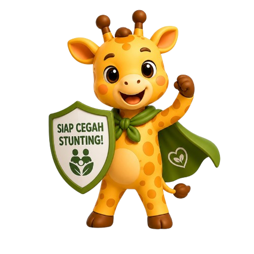

Wujudkan Generasi
Tinggi Harapan
Jangkau Potensi, Tumbuh Sehat, Raih Masa Depan. Bersama JANGGIRA, mari pahami bahwa pencegahan stunting lebih dari sekadar nutrisi, melainkan juga pola asuh yang penuh cinta.

Kenapa Harus JANGGIRA?
"Anak tidak hanya membutuhkan makanan untuk tumbuh, tetapi juga pengasuhan untuk berkembang."
Latar Belakang
Stunting merupakan masalah kesehatan yang menghambat pertumbuhan anak. Pencegahannya tidak hanya berkaitan dengan pemenuhan gizi, tetapi juga melibatkan pola asuh, stimulasi, perhatian, dan pemantauan.
Melalui JANGGIRA, kami menyampaikan edukasi pencegahan stunting dengan cara yang lebih menarik, mudah dipahami, hangat, dan dekat dengan keluarga tanpa menghakimi.
Makna Nama Kami
Jangkau
Merepresentasikan harapan agar setiap anak mampu mencapai potensi tumbuh kembang optimal.
Giraffe (Jerapah)
Simbol pertumbuhan dan harapan. Tinggi bukan hanya fisik, tapi tingginya cita-cita masa depan anak.
5 Langkah Wujudkan Generasi Hebat
Tingkatkan Pengetahuan
Meningkatkan pemahaman keluarga mengenai apa itu stunting dan cara pencegahannya sejak dini.
Kesadaran Pola Asuh
Membangun kesadaran bahwa pola asuh dan perhatian orang tua sangat krusial bagi tumbuh kembang anak.
Pengasuhan Responsif
Mendorong orang tua untuk memberikan pengasuhan yang responsif, penuh kasih sayang, dan perhatian utuh.
Gizi & Stimulasi
Memastikan pemenuhan gizi seimbang, pemberian ASI eksklusif, stimulasi motorik, dan pemantauan rutin.
Lingkungan Sehat
Membangun pemahaman bahwa pencegahan stunting butuh ekosistem keluarga yang sehat jasmani dan rohani.
Ruang Literasi Janggira
Kumpulan artikel edukasi dari tim Janggira untuk membantu perjalanan Anda mengasuh si kecil.

Anak Tumbuh Bukan Hanya dari Apa yang Dimakan
Anak sudah makan cukup, tapi apakah sudah cukup diasuh? Ternyata, pola asuh orang tua juga punya peran penting dalam perjalanan tumbuh kembang anak...

1000 Hari yang Menentukan: Membangun Pertumbuhan Anak, Mencegah Stunting
Stunting bukan hanya tentang anak yang pendek. Di baliknya ada tumbuh kembang dan masa depan yang perlu diperjuangkan sejak dini...
Remaja Putri Sehat, Langkah Awal Menuju Generasi Bebas Stunting
Upaya pencegahan tidak hanya dilakukan setelah bayi lahir, melainkan dimulai sejak masa remaja untuk mempersiapkan calon ibu yang sehat...